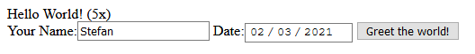
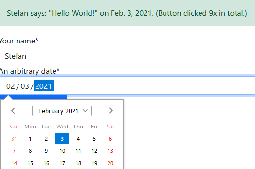

Django allows building simple (and complex) web apps quickly, using Django Templates for rendering. By default, forms, buttons, and other elements are not styled and look quite ugly:

Using Bootstrap and django-crispy-forms, the rendered templates can easily be improved to look much nicer, without having to adjust styling manually. For example:

As an example, I extend my Django “Hello World” App (described in a previous post) by adding a simple form and rendering it with Bootstrap and django-crispy-forms. All it does is asking for the user’s name and a date and then displaying <username> says "Hello World!" on <date> and a counter of how often the button has been clicked. Still, the small example illustrates how to use Bootstrap and django-crispy-forms. Especially with many or large forms, django-crispy-forms becomes useful to reduce repetitive boilerplate.
Installing django-crispy-forms
Install the dependency and also add it to requirements.txt.
pip install django-crispy-formsAdd crispy_forms inside settings.py:
INSTALLED_APPS = (
...
'crispy_forms',
)Enable the Bootstrap 4 template pack, adding the following line to settings.py:
CRISPY_TEMPLATE_PACK = 'bootstrap4'So far, there is no official 'bootstrap5' template pack, but the 'bootstrap4' pack also seems to work with Bootstrap 5, which I use later.
Building a crispy Form
Creating a Django Form
As an example, I create a new form that allows users to specify their name and an arbitrary date that will be displayed in the “Hello World” app. For that, I create helloworld/forms.py with the following content:
import datetime
from django import forms
class HelloWorldForm(forms.Form):
"""Form asking for the user's name and an arbitrary date, both used inside the displayed 'Hello World' text."""
username = forms.CharField(label='Your Name', max_length=100)
date = forms.DateField(label='An arbitrary date', initial=datetime.date.today,
widget=forms.widgets.DateInput(attrs={'type': 'date'}),
help_text='The entered name and date will be displayed temporarily but publicly in the '
'generated "Hello World" message. It will not be stored.')Most field arguments are optional but provide additional information for django-crispy-forms to display in the Bootstrap form.
I then use this form inside views.py for my index view (the only view of the “Hello World” app so far):
def index(request):
# retriever counter model instance from DB or create it if it doesn't exist yet
counter, created = Counter.objects.get_or_create(name='hello-world-button')
# increment counter when a POST request arrives (from the button click)
# see previous blog post: https://stefanbschneider.github.io/blog/django-db
if request.method == 'POST':
counter.value += 1
counter.save()
# and get the values filled in form
form = HelloWorldForm(request.POST)
if form.is_valid():
username = form.cleaned_data['username']
date = form.cleaned_data['date']
else:
form = HelloWorldForm()
username = 'Nobody'
date = datetime.date.today()
context = {
'clicks': counter.value,
'form': form,
'username': username,
'date': date,
}
return render(request, 'helloworld/index.html', context)Finally, show the form in the index.html template:
<div class="alert alert-success" role="alert">
{{ username }} says: "Hello World!" on {{ date }}. (Button clicked {{ clicks }}x in total.)
</div>
<form action="{% url 'helloworld:index' %}" method="post">
{% csrf_token %}
{{ form }}
<button type="submit" class="btn btn-primary">Greet the world!</button>
</form>Now, when running the development server, the app shows the new form:
The “Hello World” message should display the entered username and date as well as the total click count. However, the form does not yet use Bootstrap and is still quite ugly!
Making the Form Pretty
To make the form look nicer, I first include Bootstrap. For using Bootstrap, simply include the Bootstrap CCS and JavaScript inside the head of the Django app’s main/base template. The Bootstrap website has the latest instructions.
For my “Hello World” Django app, I simply add the following lines inside helloworld/templates/helloworld/index.html:
<head>
<title>Hello World</title>
{# Bootstrap #}
<link href="https://cdn.jsdelivr.net/npm/bootstrap@5.0.0-beta1/dist/css/bootstrap.min.css" rel="stylesheet" integrity="sha384-giJF6kkoqNQ00vy+HMDP7azOuL0xtbfIcaT9wjKHr8RbDVddVHyTfAAsrekwKmP1" crossorigin="anonymous">
<script src="https://cdn.jsdelivr.net/npm/bootstrap@5.0.0-beta1/dist/js/bootstrap.bundle.min.js" integrity="sha384-ygbV9kiqUc6oa4msXn9868pTtWMgiQaeYH7/t7LECLbyPA2x65Kgf80OJFdroafW" crossorigin="anonymous"></script>
<!-- other includes -->
</head>
<!-- body -->This loads the new Bootstrap 5 from the JSDeliver CDN network so it can be used within the Django app templates. Now, the alert and button should already look nicer, but the form fields will still look ugly.
To also render the form fields with Bootstrap, I use django-crispy-forms. All it takes, is loading crispy and passing the form to crispy inside index.html:
{% load crispy_forms_tags %}
<div class="alert alert-success" role="alert">
{{ username }} says: "Hello World!" on {{ date }}. (Button clicked {{ clicks }}x in total.)
</div>
<form action="{% url 'helloworld:index' %}" method="post">
{% csrf_token %}
{{ form | crispy }}
<button type="submit" class="btn btn-primary">Greet the world!</button>
</form>Now, the Django app should be rendered with Bootstrap and already look much nicer:
The nice thing is that crispy will handle all the overhead of styling each form field with bootstrap, which is particularly useful when having many large forms inside a Django app.
What Next?
Small example apps I built with Django and deployed on Heroku, using Bootstrap:
- Quotify: An example app showing inspirational quotes. [Code] [App]
- Ideally: Organize & Grow Your Ideas. [Code] [App]
- FeelYa: The app that gets you! [Code] [App]
Other blog posts: